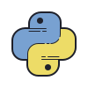

Sobre mí
Soy un chico de 18 años, curioso y emocionado por aprender cada día más sobre el mundo de la programación. Trabajo principalmente en la parte Frontend, pero también tengo conocimientos en Backend. Soy autodidacta y actualmente estoy disponible para trabajar en cualquier modalidad, con el objetivo de ganar experiencia y seguir creciendo profesionalmente.
Tecnologías y herramientas
JavaScript
Basico
HTML
Intermedio
CSS
Intermedio
Python
Intermedio
Docker
Basico
GitHub
Basico
Proyectos

Interphase
Interfaz de viajes para vuelos y hoteles
Viajar a tu lugar favorito nunca habia sido tan facil, con esta interfaz podras encontrar los mejores precios en vuelos y hoteles.
Python
CSS
Reflex

Educación
Soy una persona autodidacta. En mi país, estudié un poco de programación en una escuela, pero la mayor parte de mis conocimientos los adquirí por mi cuenta, a través de cursos, proyectos personales y documentación en línea. Actualmente, estoy profundizando en JavaScript para, en el futuro, crear páginas web más profesionales con React. Al ser autodidacta, siempre estoy abierto a nuevas formas de aprendizaje y a desafiarme con nuevos retos… ¡Mi aprendizaje nunca se detiene!
Habilidades blandas
- Trabajo en equipo
- Comunicación efectiva
- Adaptabilidad
- Respeto
- Aprendizaje rapido
Built with Reflex